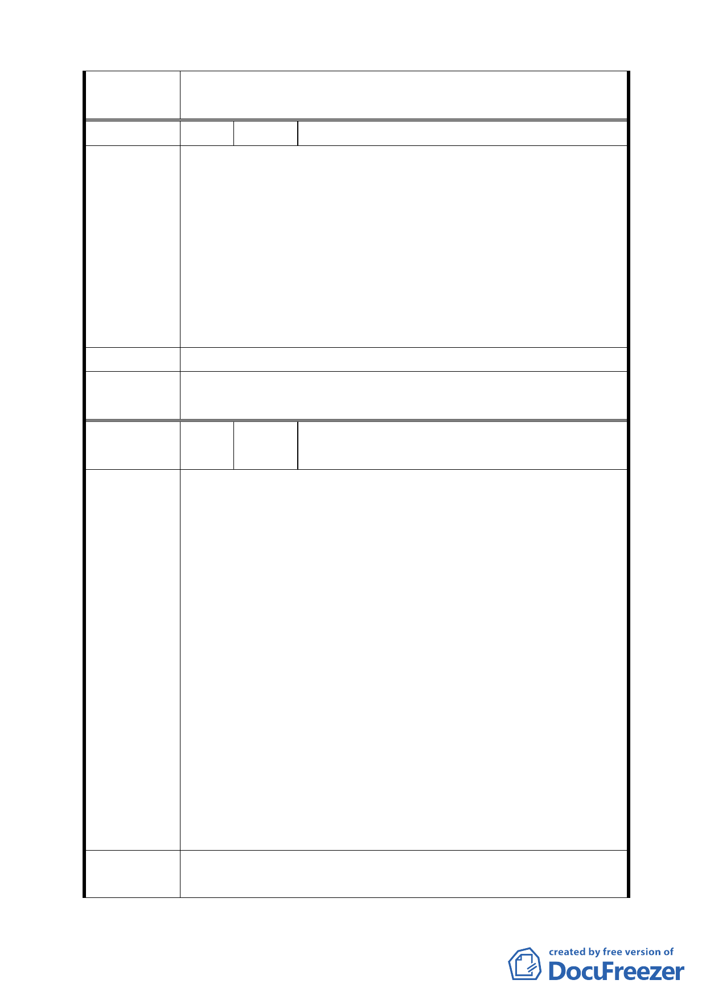

依市府所送「第 574 次臺北市都市計畫委員會議決議回應資
委員會決議 料」修正後通過。
編 號 2 陳情人 發展局函轉未具名市長信箱書面建議
1. 綠地部分為何不直接改為公園，是否他日變更地目之用。
2. 8 公尺道路太小，5000 戶居民上下班恐嚴重塞車建議 12
公尺。
陳 情 理 由 3. 是否是換了市長，所以全部要重新設計開發計畫，不能用
舊的計畫案嗎?
4. 重新設計開發計畫，不需經地主知道答應就可以執行嗎?
5. 反對生態公園，請改為一般公園。
建議辦法
委員會決議
依市府所送「第 574
料」修正後通過。
次臺北市都市計畫委員會議決議回應資
編 號 3 陳情人 發展局函轉奇岩里里長賴進利於市長信箱書
面建議
奇岩新社區開發，初期規劃有里辦公處、社區發展協會、地
主、地方人士參與，為什麼變更設計，能把門關起來，高興
怎麼劃怎麼變就可以嗎?不用里辦公處、社區發展協會、地
主、地方人士參與，隨便開個說明會，就公告實施了嗎? 對
於奇岩新社區開發案，整合里辦公處、社區發展協會、地主、
地方人士參與有以下幾點疑問：
1. 新社區開發案對聯外道路規劃問題?現在磺港路已經夠塞
陳情理由
車了，1500 戶進來我們怎麼辦?
2. 公館路 130 巷、166 巷低窪地區排水怎麼規劃?
3. 奇岩新社區開發案中的生態社區如何規劃?
4. 奇岩新社區開發案中老樹大部份都是榕樹，這對日後建築
基地不會有影響嗎?為什麼整個規劃案一定要遷就它?對
二、三十年所謂的老榕樹不能就地移植嗎?
新社區的開發，要對舊社區有助益，整個開案都在奇岩里，
以目前的規劃對奇岩里只有破壞沒有建設，盼市政府的官員
們重視我們的意見，了解我們的需求。
建
議
辦
法
1. 將綠地調整成該開發案外圍，做成行人及腳踏車道；一方
面配合跑步及騎腳踏車運動，另方面在開發中或開發後緩
10